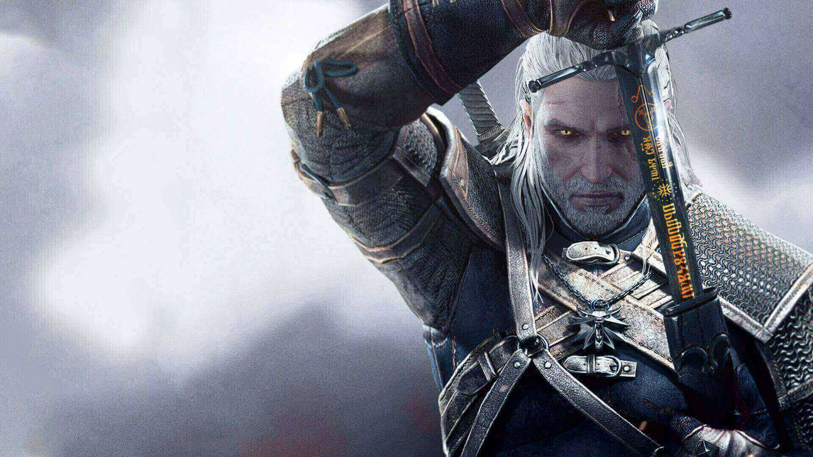

15 essentiele tips om te overleven in de Witcher 3 - Wild Souls
-
Hoe kan ik meteen beter worden in het spel?
Goeie vraag, in de open-wereld kun je te paard vechten. Geralt is bijzonder krachtig wanneer hij op zijn paard rijdt. Je kunt snel galopperen en zwaaien als een god.
-
Wat zal ik eerst upgrade?
Upgrade eerst je snelle aanval, ongeacht je playstyle. Fast Attack is namelijk de betrouwbaarste manier om schade aan te richte. Probeer ook de volgende skills, vroeg in het spel te krijgen:
- ACQUIRED TOLERANCE
- EXPLODING SHIELD
- WHIRL
- DEADLY PRECISION
- REND
- PRECISE BLOWS
- ACTIVE SHIELD **works with exploding shield**
Ik vind veel waardeloze troep, is het waard om alles op te pakken?
Zoek alles uit. Je hebt zelfs de meest nutteloze dingen nodig voor alchemie en knutselen.
Ik wil mijn kararakter uitrusten met de beste zwaarden en panser.
Als je op zoek bent naar gratis zwaarden pantser. Zoek dan de zeeen van skellige af. Er zijn waardevolle spullen te vinden bij zee vraken, aangegeven met een witte cirkel op je mini-map. Hier vindt je de beste zwaarden en pantsers die het spel te bieden heeft.
-
Heb problemen met het verslaan van vijanden met schilden. Kan ik langs vijanden heen rollen voor een aaval in de rug?
Er zijn geen "onoverwinnelijke frames" op ontwijken. Dit is geen Bloodborne of Bayonetta. Als je ontwijkt, moet je de schade die wordt aangericht volledig voorkomen, als je onwijkt rol dan weg van je vijanden.
-
ik ben het beu om mijn monster trofee rond te dragen, wat kan ik met ze doen?
Plaats je trofee op de grond op een plek naar keuze. De game zal het item voor altijd op die plek opslaan.
-
Mijn karakter wordt vertraagt als ik te veel spullen mee breng, wat kan ik hier aan doen?
Vergroot je inventaris. Als je een zadeltas koopt, wordt je voorraad verhoogd van 60 tot 90 of zelfs hoger, zodat je op elk gewenst moment meer goederen bij je kunt hebben, zelfs als je niet te paart bent.
-
Zijn er nog exploits, voor dit spel?
Stuur Roach midden van het slagveld voor een gemakkelijke overwinning. Verrassend genoeg heeft hij geen health bar. Dus je kunt hem gebruiken om vijanden af te leiden, voor als je vast zit in het spel. Sommige noemen het vals spelen, ik noem het je kansen benutten.
-
Geralt heeft zwakke knieen, wat als ik van een hoge plek moet springen?
U kunt valschade verminderen. De Witcher 3 is geen Skyrim. De valschade is belachelijk. Je wilt nooit van een enigszins hoog punt springen. Maar voor het geval dat, dat moet kun je op de rolknop drukken om de meeste schade te beperken.

-
Welke panser type zal ik gebruiken?
Kies een bepantsertype en blijf erbij! Je merkt misschien dat er een algemene vaardigheid is die de effectiviteit van elk pantser van een bepaald type verbetert, zoals Griffin School Techniques, die de tekenintensiteit en uithoudingsregeneratie voor elk gedragen medium verhoogt. Medium armor is het gemakkelijkst aan te bevelen omdat het geen zwakke punten heeft, maar als je liever een hogere schadebeperking hebt ten koste van Stamina-regeneratie, is zware Armor geen slechte keuze. Licht pantser mag alleen worden gereserveerd voor spelers die weten wat ze doen.
-
Hoe kan ik schade aan mijn karakter voorkomen, tijdens gevechten?
Geralt heeft twee snelle manieren om aanvallen te vermijden: een zijwaartse ontwijking of een grotere rollende sprong. De zij-stap ontwijking zou je "go to move" moeten zijn, al zijn er bepaalde vijanden en aanvallen die een volledige rol vereisen om schade te vermijden. Oefen ontwijken vroeg in het spel, zodat je de timing kunt leren.
-
Hoe versla ik sterkere vijanden?
Gebruik Quen voor moeilijke gevechten. Hoewel verschillende van de schade-georiënteerde tekens erg effectief zijn, is Quen geweldig om je een gezondheidsbuffer te geven tijdens de meer uitdagende gevechten van het spel.
 -
Ik ben nog niet goed ben in gevechten. Wat zal ik doen als ik in een gevecht kom?
Rennen van een gevecht is beter dan doodgaan. Als je bijna dood bent, probeer dan een Yrden op de grond te plaatsen om vijanden te vertragen en zo snel mogelijk weg te rennen.
Wat moet ik doen met alcohol, verkopen?
Alcohol is belangrijk - je kunt het gebruiken om drankjes op te laden nadat je ze hebt gebruikt.

Wat doen bewakkers als ze me betrappen op stelen?
Als bewakers je betrapen terwijl je de wet overtreedt, zullen ze je aanvallen, ze zijn niet degenen om mee te rotzooien. Ze slaan je in elkaar en nemen de helft van je geld.